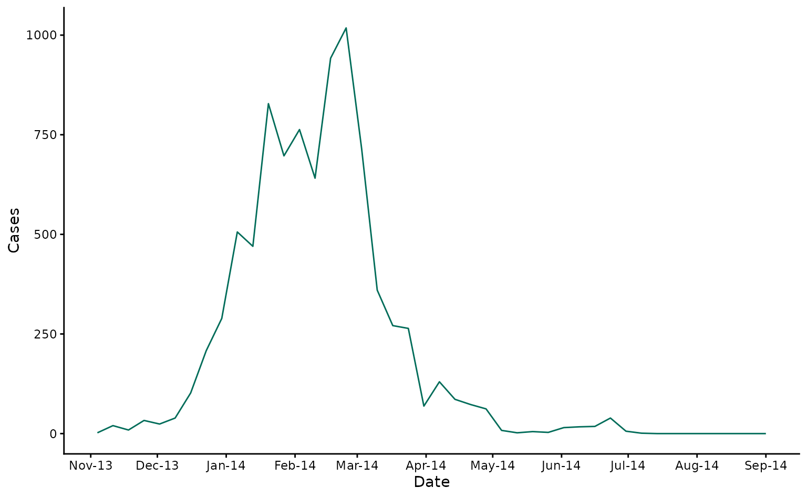
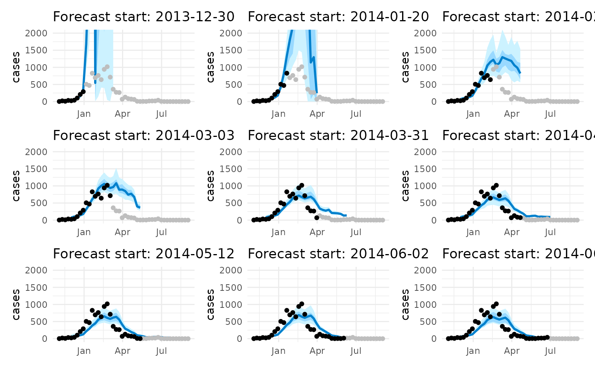

GAM-based Simulation Forecasting with climateR0
gam-simulation-workflow-new.RmdThis vignette demonstrates how to use the climateR0
package for GAM-based forecasting of disease cases, incorporating
temperature-dependent R0 values. We’ll use the Fiji 2013/14 dengue
outbreak as a case study.
Data Preparation
First, let’s load and examine the data:
# Load example data
data(fiji_2014)
# Plot the case data
input_cases <- ggplot2::ggplot(fiji_2014) +
ggplot2::geom_line(ggplot2::aes(x = date, y = cases), col = "#016c59") +
ggplot2::scale_x_date(breaks = "month", date_labels = "%b-%y") +
ggplot2::labs(x = "Date", y = "Cases") +
ggplot2::theme_classic()
input_cases
Setting Up Parameters
We need to define some key parameters for our analysis:
# Population and reporting parameters
pop_central_division_fiji <- 342000
proportion_reported <- 0.1
# Prepare data for analysis
prepare_data_out <- prepare_data(
input_data = fiji_2014,
pop = pop_central_division_fiji,
rep_prop = proportion_reported
)
# Extract processed data
model_data <- prepare_data_out$model_data
prediction_dates <- prepare_data_out$prediction_datesSetting Up Forecast Parameters
Now we’ll set up our forecast parameters:
# Define forecast parameters
forecast_horizon <- 10 # weeks ahead to forecast
n_start_dates <- 9 # number of forecast start dates to explore
# Generate prediction start dates
prediction_vals <- define_prediction_starts(
prediction_dates = prediction_dates,
horizon = forecast_horizon,
n_start = n_start_dates
)Generating Forecasts
Let’s generate forecasts for each start date:
# Set seed for reproducibility
set.seed(123)
# Store plots
plot_list <- list()
# Generate forecasts for each start date
for (ii in seq_along(prediction_vals)) {
prediction_start <- prediction_vals[ii]
# Generate prediction
generate_output <- generate_prediction(
model_data = model_data,
input_data = fiji_2014,
prediction_start = prediction_start,
horizon = forecast_horizon,
pop = pop_central_division_fiji,
rep_prop = proportion_reported,
n_sim = 50,
fix_all_covariates = FALSE
)
# Extract predictions
prediction_out <- generate_output$prediction_out
cases_data <- prediction_out[, "cases_sim", ]
# Calculate summary statistics
summary_stats <- data.frame(
date = as.Date(prediction_out[, "date", 1], origin = "1970-01-01"),
median = apply(cases_data, 1, median),
lower50 = apply(cases_data, 1, quantile, probs = 0.25, na.rm = TRUE),
upper50 = apply(cases_data, 1, quantile, probs = 0.75, na.rm = TRUE),
lower90 = apply(cases_data, 1, quantile, probs = 0.05, na.rm = TRUE),
upper90 = apply(cases_data, 1, quantile, probs = 0.95, na.rm = TRUE)
)
# Calculate R0 from the GAM model
r0_out <- exp(generate_output$model_out$coefficients[1])
r0_estimate <- data.frame(
date = model_data$date,
r0_est = model_data$rR0 * r0_out
)
# Define training window
train_dataset <- model_data[model_data$date <= prediction_start, ]
# Create plot
p1 <- ggplot(summary_stats, aes(x = date)) +
geom_ribbon(aes(ymin = lower90, ymax = upper90, fill = "90% PI")) +
geom_ribbon(aes(ymin = lower50, ymax = upper50, fill = "50% PI")) +
geom_line(aes(y = median, color = "Forecast"), linewidth = 1) +
geom_point(data = model_data,
aes(x = date, y = cases, color = "Data (all)")) +
geom_point(data = train_dataset,
aes(x = date, y = cases, color = "Data (real-time)")) +
scale_color_manual(values = c(
Forecast = rgb(0, 0.5, 0.8),
"Data (all)" = "grey",
"Data (real-time)" = "black"
)) +
scale_fill_manual(values = c(
"90% PI" = rgb(0.8, 0.95, 1),
"50% PI" = rgb(0.6, 0.85, 1)
)) +
coord_cartesian(ylim = c(0, 2e3)) +
guides(fill = "none", color = "none") +
labs(
title = paste0("Forecast start: ", prediction_start),
x = NULL,
y = "cases"
) +
theme_minimal() +
theme(legend.position = c(0.8, 0.8))
plot_list[[ii]] <- p1
}
#> | | | 0% | |======== | 11% | |================ | 22% | |======================= | 33% | |=============================== | 44% | |======================================= | 56% | |=============================================== | 67% | |====================================================== | 78% | |============================================================== | 89% | |======================================================================| 100%
#> | | | 0% | |======== | 11% | |================ | 22% | |======================= | 33% | |=============================== | 44% | |======================================= | 56% | |=============================================== | 67% | |====================================================== | 78% | |============================================================== | 89% | |======================================================================| 100%
#> | | | 0% | |======== | 11% | |================ | 22% | |======================= | 33% | |=============================== | 44% | |======================================= | 56% | |=============================================== | 67% | |====================================================== | 78% | |============================================================== | 89% | |======================================================================| 100%
#> | | | 0% | |======== | 11% | |================ | 22% | |======================= | 33% | |=============================== | 44% | |======================================= | 56% | |=============================================== | 67% | |====================================================== | 78% | |============================================================== | 89% | |======================================================================| 100%
#> | | | 0% | |======== | 11% | |================ | 22% | |======================= | 33% | |=============================== | 44% | |======================================= | 56% | |=============================================== | 67% | |====================================================== | 78% | |============================================================== | 89% | |======================================================================| 100%
#> | | | 0% | |======== | 11% | |================ | 22% | |======================= | 33% | |=============================== | 44% | |======================================= | 56% | |=============================================== | 67% | |====================================================== | 78% | |============================================================== | 89% | |======================================================================| 100%
#> | | | 0% | |======== | 11% | |================ | 22% | |======================= | 33% | |=============================== | 44% | |======================================= | 56% | |=============================================== | 67% | |====================================================== | 78% | |============================================================== | 89% | |======================================================================| 100%
#> | | | 0% | |======== | 11% | |================ | 22% | |======================= | 33% | |=============================== | 44% | |======================================= | 56% | |=============================================== | 67% | |====================================================== | 78% | |============================================================== | 89% | |======================================================================| 100%
#> | | | 0% | |======== | 11% | |================ | 22% | |======================= | 33% | |=============================== | 44% | |======================================= | 56% | |=============================================== | 67% | |====================================================== | 78% | |============================================================== | 89% | |======================================================================| 100%
# Display all plots
wrap_plots(plot_list, ncol = 3)
Model Interpretation
The GAM model provides insights into the relationship between cases and various factors:
# Extract model from last prediction
last_model <- generate_output$model_out
# Print model summary
summary(last_model)
#>
#> Family: Negative Binomial(1.216)
#> Link function: log
#>
#> Formula:
#> cases ~ offset(log_rR0 + log_pop_susceptible) + log_weighted_lagged_cases
#>
#> Parametric coefficients:
#> Estimate Std. Error z value Pr(>|z|)
#> (Intercept) 3.29793 0.49315 6.687 2.27e-11 ***
#> log_weighted_lagged_cases 0.54404 0.09859 5.518 3.42e-08 ***
#> ---
#> Signif. codes: 0 '***' 0.001 '**' 0.01 '*' 0.05 '.' 0.1 ' ' 1
#>
#>
#> R-sq.(adj) = 0.583 Deviance explained = 45.3%
#> -REML = 183.85 Scale est. = 1 n = 30Key Features of the Implementation
-
Data Preparation:
- Incorporates temperature-dependent R0 values
- Calculates weighted lagged cases using the dengue serial interval
- Tracks population susceptibility
-
Forecasting:
- Uses GAM models with negative binomial distribution
- Incorporates uncertainty through bootstrap simulations
- Provides prediction intervals at 50% and 90% levels
-
Model Flexibility:
- Can use either SIR-like (fixed covariates) or flexible models
- Allows for pre-fitted models to be used
- Handles missing data appropriately